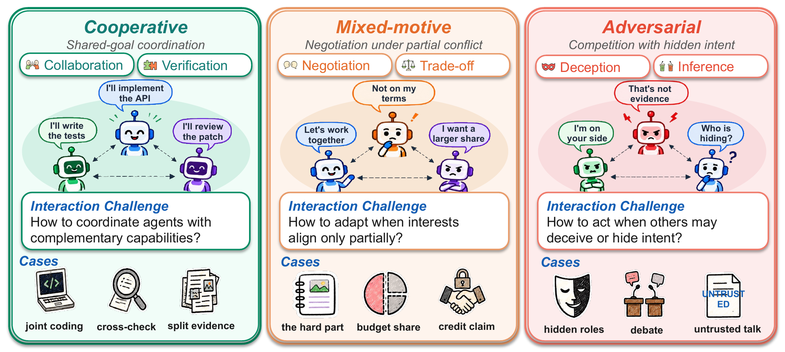
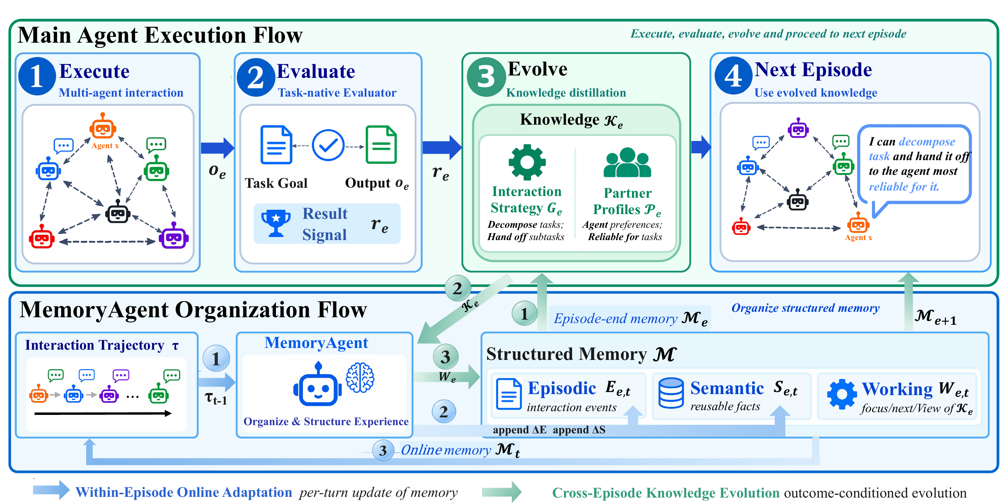
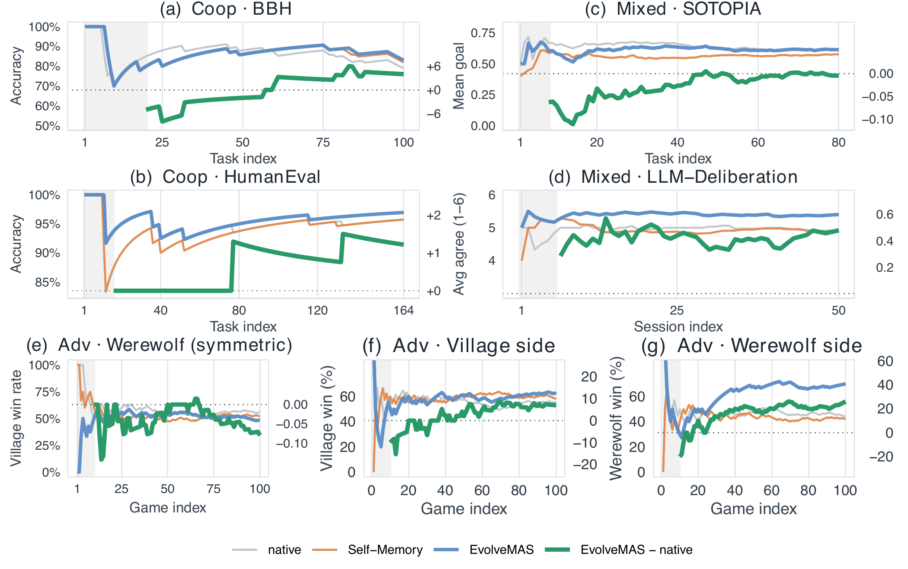
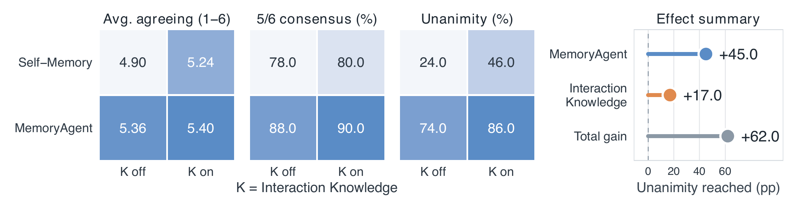
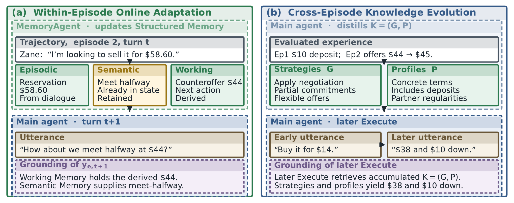

A Unified Self-Evolution Framework for Decentralized Multi-Agent Systems
chuats@comp.nus.edu.sg
Abstract
Decentralized multi-agent systems (MAS) let large language model agents interact without centralized control. These agents need to adapt to one another at test time and reuse accumulated experience to refine their strategies for later interactions, across cooperative, mixed-motive, and adversarial settings. Existing approaches usually build adaptation mechanisms for one particular setting.
We propose EvolveMAS, a unified self-evolution framework that supports experience-driven adaptation within and across episodes. EvolveMAS pairs each main agent with a dedicated MemoryAgent for test-time memory governance, which keeps an isolated Structured Memory outside the main agent's reasoning context. During Within-Episode Online Adaptation, the MemoryAgent updates episodic, semantic, and working memory from interaction evidence. During Cross-Episode Knowledge Evolution, the main agent uses its memory and the episode outcome to distill reusable knowledge: partner profiles and interaction strategies.
Across five benchmarks and six evaluation configurations spanning the three settings, EvolveMAS reaches the highest normalized average score among the compared methods. Ablations show that test-time memory governance and cross-episode knowledge reuse each improve performance.
Method
Every agent runs the same episode loop. A MemoryAgent sits beside it, turns what the agent observed into Structured Memory, and hands back a compact view before the agent acts.

After each turn, the MemoryAgent reads the new interaction evidence and updates the agent's memory. The main agent never carries the raw transcript in its own context.
When an episode ends, the task-native result is used to revise the agent's Interaction Knowledge, which carries into the next episode while working memory is reset.
Results
Each baseline comes from one setting (its native benchmarks are shaded) and is transferred to the other settings under the same self-evolution protocol. EvolveMAS is best or second-best in every column.
| Cooperative | Mixed-motive | Adversarial | |||||
|---|---|---|---|---|---|---|---|
| Method | BBH | HumanEval | SOTOPIA | Deliberation | WW-V | WW-W | Avg. |
| AgentNet | 79 | 95.7 | 0.554 | 2.60 | 51.0 | 45.0 | 61.6 |
| ChatDev | 73 | 95.7 | 0.509 | 2.06 | 53.0 | 49.0 | 59.3 |
| SOTOPIA | 72 | 95.7 | 0.618 | 3.14 | 55.0 | 57.0 | 65.6 |
| LLM-Deliberation | 74 | 93.9 | 0.450 | 4.92 | 64.0 | 46.0 | 67.5 |
| Werewolf/DPIns | 72 | 92.7 | 0.588 | 3.41 | 55.0 | 44.0 | 63.2 |
| Self-Memory | 82 | 95.7 | 0.576 | 4.90 | 58.0 | 42.0 | 69.5 |
| EvolveMAS | 83 | 97.0 | 0.613 | 5.40 | 62.0 | 70.0 | 77.2 |
WW-V and WW-W are village win rate and wolf deception success in one-sided Werewolf audits. Avg. is the mean of six percentage-scaled metrics (SOTOPIA × 100, Deliberation × 100/6). Bold is best, underline second-best, ties included.


Case study
An instrumented SOTOPIA episode. Within the episode, new evidence is written into Structured Memory turn by turn. After it ends, the outcome is distilled into strategies and a partner profile that shape the next negotiation.

Use it
The evolvemas package adds the MemoryAgent and the knowledge step to an existing multi-agent system through three calls. Your system keeps control of who sees which message and how an episode is scored.
# pip install "evolvemas[anthropic] @ git+https://github.com/WuYalun/EvolveMAS" from evolvemas import EvolveMAS, AnthropicLLM plugin = EvolveMAS("runs/memory", AnthropicLLM()) plugin.register("seller", profile="sells an antique table") for episode in episodes: plugin.begin_episode("seller") for turn in episode: memory = plugin.context("seller") # inject before the agent acts reply = my_agent(prompt + memory) plugin.observe("seller", [reply, partner_msg]) # MemoryAgent updates memory plugin.end_episode("seller", result) # distill strategies and profiles
context(agent)Returns the memory and knowledge block to put in the agent's prompt.
observe(agent, events)Logs what the agent saw and runs the MemoryAgent update.
end_episode(agent, result)Revises Interaction Strategies and Partner Profiles from the outcome.
Citation
@article{wu2026evolvemas,
title = {EvolveMAS: A Unified Self-Evolution Framework for Decentralized Multi-Agent Systems},
author = {Wu, Yalun and Ma, Qiwei and Xu, Bingbing and Zhang, Dan and Bai, Long and
Wang, Boyang and Li, Jiatong and Lv, Zheqi and Yuan, Shaozu and Wang, Peiying and
Zhang, An and Wang, Jiawei and Chua, Tat-Seng},
journal = {arXiv preprint arXiv:XXXX.XXXXX},
year = {2026}
}